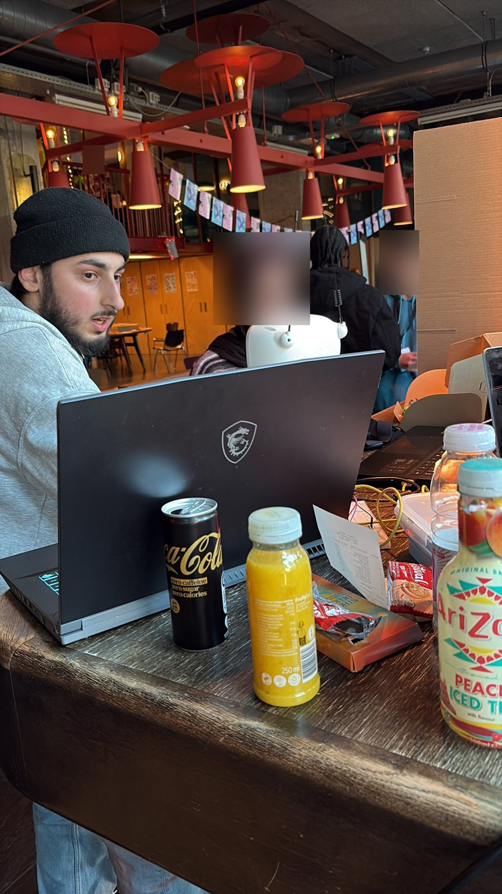

9. Society 5.0 festival
We wilden Reachy testen met bezoekers en feedback ophalen.
wo 4 november 2026, Volkshotel
Wat we deden
Op woensdag 4 november was het Society 5.0 festival in het Volkshotel. We lieten bezoekers Reachy proberen. Meestal lieten we Mirror zien met mockdata, zodat we de riem niet bij elke bezoeker opnieuw hoefden in te stellen. Bezoekers konden de ademriem ook zelf dragen, en dan las Reachy hun echte ademhaling uit.
Mirror is de modus van onze opdrachtgever Bin Yu. De robot spiegelt hoe jij bent. Adem je veel, dan beweegt hij veel. Elk teamlid had een rol bij het bouwen van Mirror. De antenne- en hoofdbewegingen waren van Yusuf en Dipin. Mijn ademdata (state, rate en depth) bepaalt hoe Reachy zich gedraagt. Verandert mijn ademhaling, dan verandert het gedrag van de robot.

Wat de bezoekers zeiden
Yusuf nam bij drie bezoekers een kort testformulier af (Interpret en Mirror). Ik noem hier alleen wat ze samen lieten zien, en geen namen.
- Alle drie begrepen wat Reachy doet en leken comfortabel.
- Bij Mirror merkten twee duidelijk dat Reachy hun ademhaling volgt, en één deels. De koppeling met de antennes was voor alle drie duidelijk.
- Twee kozen Mirror om opnieuw te gebruiken en één koos Interpret.
- Alle drie noemden datagebruik als zorg. Bij twee kwam daar privacy of controle bij, bij één verkeerde interpretatie.
- Ze zouden Reachy wel gebruiken op het werk, bij een therapeut en in het ziekenhuis. Ze zouden hem niet gebruiken in de slaapkamer of thuis.
- Ze zeiden onder andere “heeft veel potentie”, “cute stem, wel beetje attitude” en “schattig, vertrouwelijk gesprek”.
Het zijn maar drie bezoekers, dus dit zegt nog niet veel. Het geeft wel een eerste idee, en de zorg om data past bij het “dark” deel van ons project.
Feedback van Claar
De echte feedback kwam van onze mentor Claar. Ze zei dat we ons in Sprint 3 moeten richten op hoe we de robot “dark” kunnen maken. Als we gaan brainstormen, kunnen we heel veel ideeën vinden. Ze wil dit op di 10 november met ons bespreken tijdens de les.
Probleem. Het wifi in het Volkshotel was erg slecht, en Reachy kon niet verbinden omdat hij alleen werkt met een netwerk met wachtwoord.
Oplossing. We gebruikten de hotspot van Yusuf op 2,4 GHz. Die werkte met alle microcontrollers en met Reachy. In mijn ESP32-script moest ik daarvoor de netwerknaam en het wachtwoord van die hotspot invullen.
Probleem. Het gehoor van Reachy. Het was luid en hij kon ons niet goed horen. We moesten heel dicht bij Reachy staan. We konden dit niet op tijd oplossen.
Oplossing. Nog niet opgelost. De app heeft al een chatvenster waarin je de berichten tussen de gebruiker en Reachy kunt lezen, maar je kunt er nog niet in typen. Volgende keer voegen we typen toe, zodat je ook kunt praten met Reachy als het te luid is.
Wat ik hieruit leer
Een demo in een drukke ruimte is anders dan testen op school. Geluid en wifi zijn dingen die ik niet vooraf had getest. Een tekstkanaal naast spraak maakt Reachy bruikbaar op plekken waar het luid is.